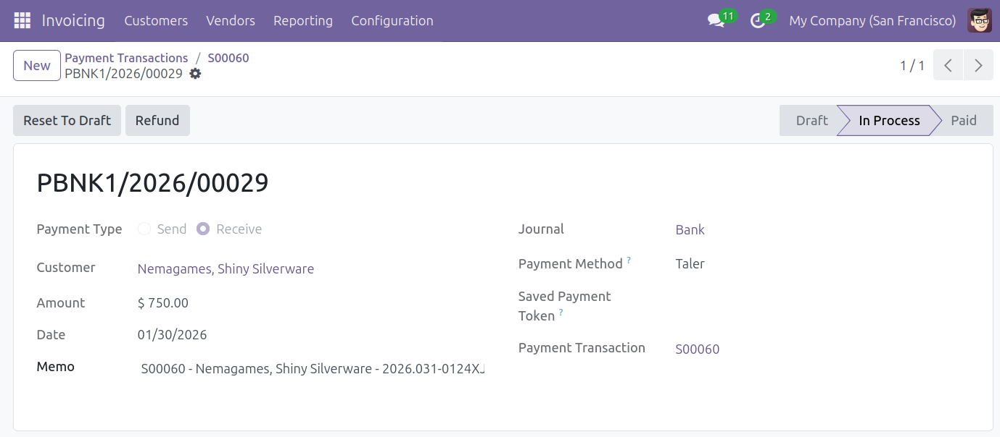
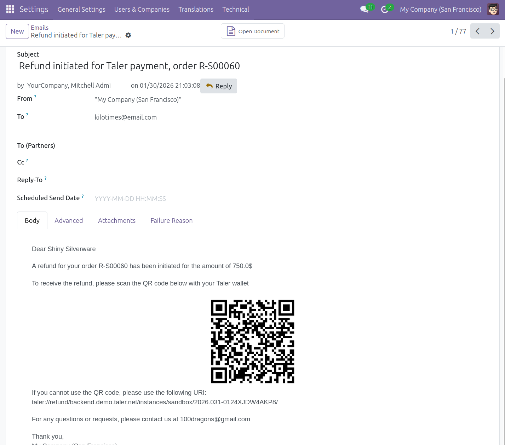

Refunds¶
Refund an online payment made using Taler¶
To make a refund to a payment made using Taler, you first have to find the payment you wish to refund.
For Odoo 18, in the
invoicingadd-on, navigate toCustomers -> Customer Paymentson the top bar.For Odoo 19, the location is
Customers -> Payments.This page will show you all the payments that have been completed.
In this example, we want to refund the payment
PBNK1/2026/00029.For a more technical option, activate the developper mode in the settings, navigate to
Configuration -> Payment Transactionson the top bar, selecte a transaction, and click on the payment in thepaymentfield on the transaction’s page.
Click on the payment that you would like to start the refund process for.
On the payment page, click
Refundin the action button section (top-left) and confirm the refund.
{kind=link}

You can set the amount you’d like to refund. The refund amount cannot be higher than the transaction amount.
You can make multiple partial refunds (for example, a 30 euros transaction can be refunded by 5 euros, and then by 10 euros later).
In case of partial refunds, the total refunded amount across multiple refunds of one transaction cannot exceed the transaction amount.
The refunded customer will receive one refund email per partial refund, with each containing a different QR Code to be scanned into their wallet.
Confirming the refund will create a new transaction, that you can view in the list of transactions, with the name
R-{Odoo reference number}.An email containing the refund QR Code will also be sent to the customer’s email address.
You can view this email in the list of sent emails, found in
Settings app -> Technical -> Emails.You may need to activate Odoo’s
Developermode (found in the settings) to access theTechnicaltab.
To receive the refund, the customer will have to scan the QR Code with their Taler wallet.
{kind=link}

Note
You need a functional email sender for this feature to work properly.
Without an email sender, the email will be generated and can be read, but it will not be sent.